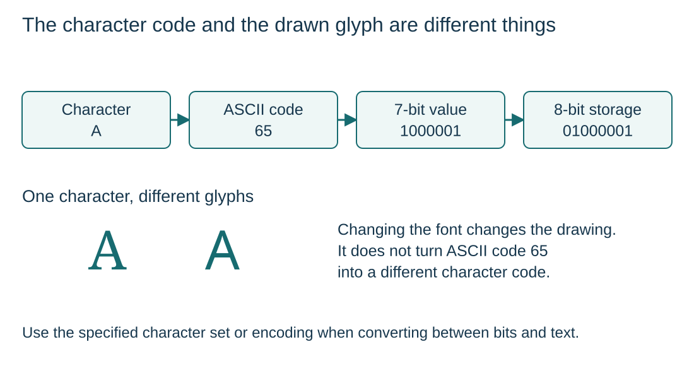

Character sets and internal binary representation
S1.07.A01
Visual overview
The character code and the drawn glyph are different things

Visual transcript
- ASCII assigns uppercase A the decimal code 65, represented in 7 bits as 1000001.
- An 8-bit storage representation with leading zero is 01000001. The leading zero does not change the value.
- A font controls the shape drawn for A; the agreed encoding controls the interpretation of the bits.
Core explanation
Code and appearance
A character set defines its characters and assigns each a numeric code. That code identifies the character independently of the font used to draw it.
From character to stored bits
- Look up the code: Use the agreed character set or encoding. ASCII uppercase A has code 65.
- Represent the number: 65 is 1000001 in 7 bits, or 01000001 with an 8-bit storage width.
- Interpret consistently: Software must use the agreed encoding to recover the intended character from the bits.
From character to stored bits
- CharacterThe user enters or the program selects a symbol.
- Numeric codeThe character set assigns that symbol a number.
- Binary storageThe number is encoded as a bit pattern in memory.
- InterpretationSoftware decodes the bits using the agreed encoding.
Worked example · Store a character when its code is provided
- Read the supplied code
The question states that the character A has numeric code 65.
- Convert the code
Convert 65 to the 8-bit pattern 01000001.
- Store the bits
The computer stores 01000001 rather than a drawn picture of A.
- Interpret the bits
Software uses the agreed encoding to map that code back to the character A.